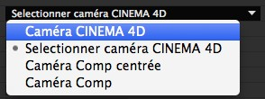

CINEWARE dans After Effects
Avec CINEWARE in After Effects, les scènes et animations de CINEMA 4D peuvent être directement chargées dans une composition After Effects où elles y seront vues et rendues.


Ce que vous devez savoir sur le flux de production de CINEWARE
Dans la nouvelle version d'Adobe After Effects, des éléments 3D complexes, des scènes, et même des animations, peuvent être chargés depuis MAXON CINEMA 4D dans une composition After Effects. L'intégration unique en son genre entre ces deux applications permet aux utilisateurs d'After Effects de créer des compositions graphiques animées complexes encore plus rapidement et facilement qu'auparavant.
Pour s'assurer d'une facilité d'utilisation optimale, CINERENDER, le puissant moteur de rendu de CINEMA 4D, a été intégré dans After Effects d'une façon qui permet de facilement et rapidement faire le rendu de calques CINEMA 4D directement dans la composition. Cela élimine le besoin de passer d'une application à l'autre ou, selon le flux de production, de faire des requêtes répétées de données 3D.
Il est simple de débuter dans le fascinant monde de la 3D. Si vous ne possédez pas déjà une version complète de CINEMA 4D, vous pouvez faire vos premiers pas dans la 3D en utilisant CINEMA 4D Lite, inclus dans Abode After Effects.
Pour un travail plus abouti et professionnel, nous recommandons les versions CINEMA 4D Broadcast ou CINEMA 4D Studio.
Toutes les informations sur ces produits sont disponibles sur www.maxon.net.
Charger et éditer des fichiers de MAXON CINEMA 4D
Des fichiers CINEMA 4D existants (.c4d) peuvent être directement chargés comme éléments utilisables dans la fenêtre de projet d'After Effects, et placés ensuite dans la composition en tant que calques CINEMA 4D. Les paramètres des calques CINEMA 4D seront affichés en tant qu'effet "CINEWARE" dans la fenêtre d'effets. Comme d'habitude, des effets supplémentaires peuvent être ajoutés à un calque CINEMA 4D. Ceux-ci affecteront le rendu généré par le moteur de rendu CINERENDER.
S'il n'existe pas de fichier CINEMA 4D, un tel fichier peut être créé en passant par le menu d'After Effects
Si une version complète de CINEMA 4D n'est pas installée sur votre ordinateur, CINEMA 4D Lite, qui est présent dans After Effects, sera alors ouvert. Après qu'une nouvelle scène a été créé, elle peut être sauvegardée via le menu
Pour apporter des changements à un fichier CINEMA 4D qui a été importé dans After Effects, sélectionnez l'élément ou le calque CINEMA 4D puis passez par le menu
Les projets qui ont été modifiés et sauvegardés dans CINEMA 4D seront automatiquement mis à jour dans After Effects.
Configuration de l'affichage / des paramètres de rendu
L'intégration du moteur de rendu de CINEMA 4D CINERENDER rend possible le rendu de calques CINEMA 4D directement dans After Effects. Cela signifie que les utilisateurs d'After Effects maintiennent un contrôle total de tous les éléments 3D présents dans leur composition, et ce jusqu'au rendu final. Les paramètres de rendu sont contrôlés par les réglages d'effet CINEWARE.
Notez que chaque calque CINEMA 4D dispose de ses propres réglages d'affichage et de rendu. Toutes les instances d'un fichier CINEMA 4D chargé dans la composition verront automatiquement leurs réglages de rendu et d'affichage synchronisés, à moins que Synchroniser le Calque, en haut du panneau de contrôle, soit désactivé.
Chaque image rendue sera mise en cache pour accélérer le flux de production. En utilisant les résolutions réduites ou automatiques, les rendus de CINEMA 4D seront également calculés en moindre résolution.
Pour s'assurer d'un flux de production plus rapide, les Paramètres de Rendu peuvent être réglés sur Logiciel pendant que vous continuez de travailler sur la composition. Les textures seront affichées en basse résolution et les matériaux seront évalués moins précisément.
Des options sont également disponibles pour désactiver les textures et les matériaux (Rendu Logiciel désactive les textures et les matériaux ; Rendu Esquisse désactive uniquement les textures) et pour éviter les pré-calculs des dynamiques ou des simulation de particules. Ces options devraient cependant être activées pour les rendus finaux ou lors de mises en cache de simulations (conformation) dans la scène CINEMA 4D.
Voir également Mise En Cache Des Dynamiques et Conformation Des Particules.
Les rendus peuvent également être grandement améliorés en mettant en cache les textures grâce à l'option Conserver les textures en RAM.
Travailler avec les caméras et les éléments de scène CINEMA 4D
Exactement comme dans After Effects, un nombre indéfini de caméras avec différents réglages, y compris d'animation, peuvent être ajoutées au fichier CINEMA 4D. Pour s'assurer d'une bonne intégration entre les deux applications, les mouvements de caméras doivent être synchronisés. Cela se passe par le biais du menu Réglages Du Projet de CINEWARE.
Vous pouvez définir ici si c'est une caméra CINEMA 4D existante ou une caméra After Effects qui doit être utilisée.
Quatre options sont disponibles :

L'option Caméra CINEMA 4D utilisera la caméra active courante de la scène CINEMA 4D. Utilisez l'option Sélectionner La Caméra CINEMA 4D pour sélectionner une caméra CINEMA 4D existante. Il est à noter que seules les caméras déjà présentes dans la scène CINEMA 4D peuvent être sélectionnées.
Les deux options suivantes permettent de créer des caméras à partir d'After Effects. La différence entre les options réside dans le système de coordonnées utilisé. L'origine du système de coordonnées utilisé par CINEMA 4D se trouve au centre de la scène et ses axes sont orientés dans l'espace 3D avec des directions positives et négatives. Dans After Effects, les coordonnées d'un point neutre sont situées dans le coin supérieur gauche de la composition.
C'est pour cela que les réglages CINEWARE offrent deux méthodes de travail pour les caméras dans After Effects. Si l'option Caméra Comp est sélectionnée, les coordonnées pour After Effects et CINEMA 4D seront les mêmes. Comme cela peut être légèrement déstabilisant pour les utilisateurs de longue date d'After Effects, l'option Centrer Caméra Comp peut être utilisée pour aligner les deux systèmes de coordonnées.
Si la fonction Extraire est utilisée pour extraire une caméra de CINEMA 4D vers After Effects, il est recommandé que l'option Caméra Comp soit utilisée. Autrement, la vue sera décalée à cause de la déviation entre les systèmes de coordonnées.
Calques
CINEMA 4D dispose d'un système de calques très complet pouvant être utilisé pour organiser des scènes 3D complexes. Ce système de calques n'est pas conçu pour créer une hiérarchie de calques empilés comme dans After Effects, mais plutôt pour grouper entre eux des éléments de la scène et pouvoir ensuite y accéder aussi facilement qu'efficacement. Des éléments distincts d'une scène peuvent par exemple être cachés ou affichés au besoin. Ces calques CINEMA 4D peuvent être activés ou désactivés individuellement dans After Effects. Seuls les calques CINEMA 4D actifs seront rendus dans le calque CINEMA 4D de la composition. Cela rend possible l'utilisation d'un fichier CINEMA 4D unique de multiples fois dans une composition donnée, en tant que calque CINEMA 4D affichant des éléments spécifiques de la scène.
Par exemple, un arrière-plan et un avant-plan 3D peuvent être séparés et empilés dans la composition After Effects, ou combinés avec un métrage.
Multi-passes (Flux de Production Linéaire)
Le multi-passes en 3D correspond au processus de rendu d'une image en plusieurs éléments d'image plutôt que comme une image unique.
Ces éléments sont ensuite assemblés lors du compositing, pendant lequel ces éléments individuels d'images peuvent être édités, ajustés, ou modifiés selon différentes méthodes, comme par exemple la correction colorimétrique. Un exemple typique de rendu multi-passes consisterait à sortir séparément différentes réflexions de surface (diffusion, spécularité, ombre, etc.) puis à les emporter ensemble dans After Effects avec différents modes.
Une composition peut être rapidement mise en place en utilisant l'option Ajouter Calques Image de CINEWARE. Plusieurs calques CINEMA 4D peuvent être créés, chacun contenant un unique élément de rendu actif. L'option Réglage Multi-Passes vous permet de définir ce qui sera affiché sur un calque CINEMA 4D donné.
Pour créer des calques additionnels pour des éléments de rendu individuels, un calque peut être dupliqué et l'élément voulu peut être ajouté en utilisant l'option mentionnée ci-dessus.
Le multi-passes est également utilisé pour sortir des passes objet, utilisées comme Luma Mattes pour la correction d'éléments individuels dans After Effects. Notez qu'il faut au minimum activer le mode de rendu Esquisse Standard pour générer des passes individuelles. Des passes additionnelles ne peuvent être sorties que via la propriété Composition.
Pour configurer des passes objet, les objets correspondants dans CINEMA 4D doivent avoir une propriété Composition qui leur est assignée, avec le groupe ID désiré. L'option multi-passes doit être également activée dans les paramètres de rendu de CINEMA 4D avec les différentes passes objet souhaitées sélectionnées. Comme After Effects affiche les noms des passes, il est recommandé que les passes soient déjà nommées dans CINEMA 4D.
Cependant, notez que les effets de post-production et la séparation des lumières individuelles (multi-passes lumière) de CINEMA 4D ne sont pas encore supportés dans cette intégration.
Pour obtenir un résultat optimal avec le multi-passes, il est recommandé que les réglages de projet d'After Effects soient réglés sur Flux De Production Linéaire (espace de travail linéarisé) et de travailler si possible avec une profondeur de couleur en 32 bits. Autrement, des artefacts peuvent apparaître.
Partager des informations de la scène
Pour aligner des animations de caméra ou des éclairages de scène entre CINEMA 4D et une composition After Effects, les caméras et les lumières ainsi que leurs animations, mises en place dans une scène CINEMA 4D, peuvent être transférées vers After Effects à tout moment. Toutes les propriétés compatibles de caméra et de lumière seront alignées. Le bouton Extraire du menu CINEMA 4D Commande permet de créer les éléments correspondants dans la composition After Effects.
Notez que seules les lumières ayant l'option Exporter vers AFX activée dans les réglages de leur onglet Général dans CINEMA 4D seront tranférées. Cette option est activée par défaut pour chaque objet lumière et pour chaque caméra dans CINEMA 4D.
Les caméras animées d'After Effects peuvent également être transférées vers la scène CINEMA 4D. Ceci peut être obtenu en utilisant l'option Fusionner dans le menu Commande.
Utilisez la commande
Utiliser des références
Un calque CINEMA 4D dans After Effects est un calque 2D. Pour placer efficacement des calques 3D depuis After Effects dans une composition, il peut être utile d'avoir les informations concernant la position d'objets CINEMA 4D sous forme de surfaces colorées / solides.
Pour cela, les objets polygonaux ou les calques dans CINEMA 4D doivent avoir une propriété Composition Externe qui leur est assignée. L'option Solide peut être activée et une taille pour la surface colorée dans After Effects peut-être alors définie.
Utilisez la fonction Extraire de CINEWARE pour importer les données correspondantes.
Pour une meilleure compatibilité au moment de l’importation, l'option Enregistrer les Polygones Pour Mélange doit être activée lors de l'enregistrement de fichiers CINEMA 4D, ou l'option correspondante Mélange doit être activée dans le menu
Aperçu des paramètres individuels
Ci-dessous, vous trouverez une brève explication des réglages de CINEWARE. Une explication fonctionnelle dans le contexte d'une application pratique peut être trouvée dans le contenu ci-dessus.
Options
Si vous souhaitez effectuer le rendu avec un autre moteur de rendu que CINERENDERER, par exemple dans une autre version de CINEMA 4D, entrez le chemin jusqu’au fichier exécutable CINEMA 4D correspondant (*.exe ou *.app). Noter que les autres versions de CINEMA 4D doivent être sous licence si elles sont utilisées pour un rendu.
Ce chemin sert uniquement à déterminer quelle version de CINEMA 4D utiliser pour modifier des fichier CINEMA 4D. Si vous disposez d’une version plus récente de CINEMA 4D et que vous souhaitez l’utiliser, il vous suffit d’entrer le chemin jusqu’au fichier exécutable CINEMA 4D correspondant (*.exe ou *.app).
C'est là que le port de communication entre CINEWARE et le moteur de rendu intégré de CINEMA 4D (CINERENDER) est défini. Si ce paramètre venait à être changé, After Effects devrait être redémarré.
Définit si le calque doit appliquer ses propriétés de rendu et de projet à tous les autres calques pour le fichier c4d dans cette composition. De la même manière, définit si oui ou non les autres calques peuvent modifer les réglages de ce calque. Notez que ce paramètre n'est visible que lorsqu'il y a plus d'une instance du même fichier c4d dans la composition.
Paramètres De Rendu
Because render times can increase dramatically for complex scenes, CINEWARE offers three different render modes:
Parce que les temps de rendu peuvent augmenter de façon significative pour les scènes complexes, CINEWARE offre trois différents modes de rendu :
Globalement, l'affichage reflète celui de la vue de CINEMA 4D et sert à prévisualiser la scène. Les matériaux et le multi-passes ne seront pas affichées.
Cet affichage sans antialiasing peut être utilisé comme étape préliminaire avant le rendu final.
Fait le rendu de la scène en utilisant les réglages de rendu définis dans la scène CINEMA 4D.
 Logiciel - Esquisse - Final
Logiciel - Esquisse - Final
Définit le type d'affichage. Soit les paramètres d'origine CINEMA 4D seront utilisés, soit l'affichage sera réduit à des Fil De Fer ou à des Boîtes pour permettre un travail plus fluide.
Désactive l'affichage des textures et des matériaux pour une navigation plus rapide
Désactive le rendu des dynamiques, des tissus, des simulations de particules et des simulations MoGraph pour accroître la rapidité d'affichage. À cause de cela, les résultats affichés de ces processus ne seront pas représentatifs. Cette option ne doit pas être activée pour le rendu final, à moins que les simulations aient déjà été mises en cache dans le fichier CINEMA 4D.
Cette option ne devrait jamais être activée pour le rendu final, puisque les effets de particules, de nombreuses fonctions MoGraph, les dynamiques ainsi que les tissus ne pourraient pas être affichés ou rendus correctement.
Accélère le rendu en mettant en cache les textures pour qu'elles n'aient pas besoin d'être recalculées (Attention : les modifications apportées aux textures ne seront pas affichées).
Réglages Du Projet
Définit la caméra qui sera utilisée pour afficher le calque CINEMA 4D.
La caméra active par défaut dans la scène CINEMA 4D.
Vous permet de sélectionner une caméra depuis la scène CINEMA 4D.
Cette caméra utilise le système de coordonnées d'After Effects.
Des coordonnées équivalentes seront affichées pour After Effects et CINEMA 4D. Comme le système de coordonnées de CINEMA 4D diffère de celui d'After Effects, les utilisateurs d'After Effects auront besoin de changer leur façon de voir les choses. Cette option doit être utilisée si une caméra CINEMA 4D est extraite, sans quoi la vue d'After Effects basculerait vers la scène CINEMA 4D.
Assigner Caméra
Si une scène CINEMA 4D contient des caméras en plus de la caméra par défaut, celles-ci peuvent être sélectionnées en utilisant le bouton Assigner Caméra.
Si une scène CINEMA 4D contient des calques, c'est ici qu'ils peuvent être sélectionnés. Seuls les éléments CINEMA 4D assignés à ces calques seront alors utilisés. Cela permet d'afficher des groupes d'objets individuels sur des calques CINEMA 4D dans After Effects.
Régler les Calques
C’est ici que les calques de la scène CINEMA 4D peuvent être sélectionnés.
Multi-passes (Flux De Production Linéaire)
Activer l'option Multi-Passes CINEMA 4D permet de définir des passes individuelles pour la scène CINEMA 4D. Celles-ci sont prédéfinies, même si l'option multi-passes n'a pas encore été activée dans la scène CINEMA 4D.
Les passes spéciales comme par exemple Masque d'Objet doivent être définies dans la scène CINEMA 4D et activées dans le menu Multi-Passes des Propriétés De Rendu.
Réglages Multi-Passes...
Ici les passes individuelles peuvent être sélectionnées pour être utilisées dans la Ligne Temporelle. Noter que les effets de post-production (Cheveux, Sketch and Toon, etc.) ne sont pas supportés.
Les multi-passes définies dans CINEMA 4D peuvent être extraites dans la Ligne Temporelle en activant l’option Définir Multi-Passes dans CINEWARE, et en cliquant sur Ajouter Calques Image.
En d’autres termes, seules les multi-passes qui avaient été définies dans les Propriétés de Rendu de CINEMA 4D seront extraites.
Ajouter Calques Image
Si l’on appuie sur le bouton Ajouter Calques Image avant d’avoir activé l’option Définir Multi-Passes, toutes les multi-passes existantes seront extraites dans la Ligne Temporelle.
Les effets de post-production et les passes lumière ne sont pas supportés par le Multi-Passes.
Commandes
La caméra active de la composition dans After Effects sera ajoutée à la scène CINEMA 4D. Cette caméra peut également être animée.
Extraire
Toutes les caméras et lumières d'une scène CINEMA 4D donnée, y compris leurs animations et propriétés, seront transférés vers la composition After Effects en tant que calques dans la ligne temporelle.
Les objets polygonaux ayant une propriété de Composition Externe qui leur est assignée seront placés dans la composition en tant que calques neutres servant de référence de position, ou en tant que surfaces colorées (solide).